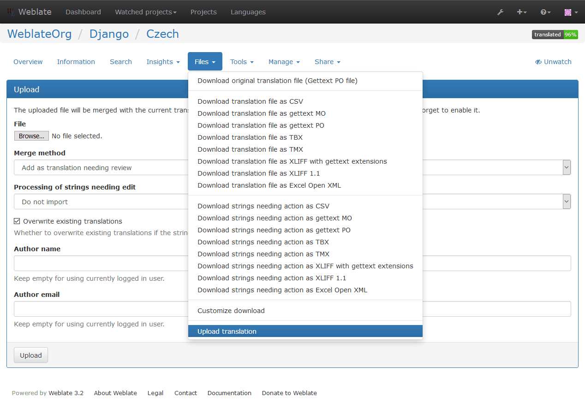

Downloading and uploading translations¶
Weblate supports both export and import of translation files. This allows you to work offline and then merge changes back. Your changes will be merged within existing translation (even if it has been changed meanwhile).
注釈
This available options might be limited by Access control.
Downloading translations¶
You can download a translatable file using the Download source file action in the Files menu. This will give you the file as it is stored in upstream version control system.
You can also download files in several other formats, including a compiled file
to use within an application (for example .mo files for GNU Gettext) using
the Files.
Uploading translations¶
You can upload translated files using the Upload translation action in the Files menu.
Weblate accepts any file format it understands on upload, but it is still recommended to use the same file format as is used for translation, otherwise some features might not be translated properly.
参考
The uploaded file is merged to current the translation, overwriting existing entries by default (this can be changed in the upload dialog).
Import methods¶
You can choose how imported strings will be merged out of following options:
- Add as translation
- Imported translations are added as translation. This is most usual and default behavior.
- Add as a suggestion
- Imported translations are added as suggestions, do this when you want to review imported strings.
- Add as translation needing review
- Imported translations are added as translations needing review. This can be useful for review as well.
Additionally, when adding as a translation, you can choose whether to overwrite already translated strings or not or how to handle strings needing review in imported file.
